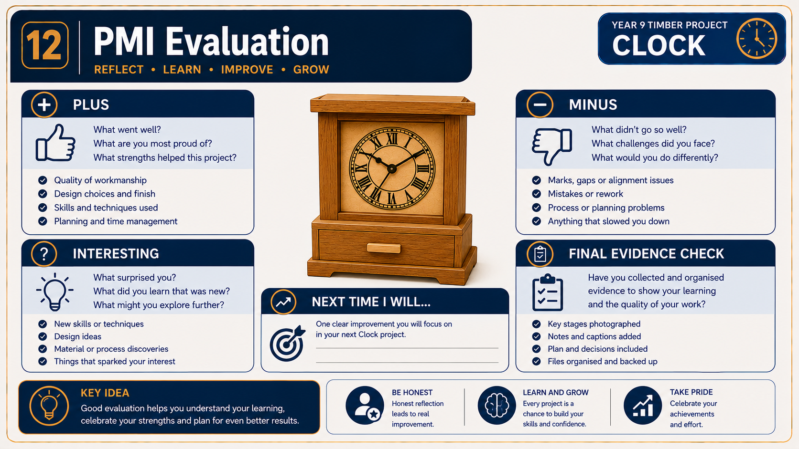

Module presentation
Learn with the slides
Use the presentation to preview Final quality, revision and reflection, then work through the theory, checks and written evidence below.
Project plan and evidence
Use the plan and save evidence
Use the supplied Clock project plan alongside the module, then open the folio when your evidence is ready.
Your work
Student details
Your entries save automatically in this browser. Use Download evidence PDF before leaving the page.
Weeks 19-20
This module
Complete final quality assurance, use feedback to revise and submit a coherent evidence package.
Theory 1
Final quality assurance for the completed Clock

Final quality assurance, or QA, is the last systematic check before the Clock is declared complete. It is not a quick glance or a chance to hide faults. Its purpose is to confirm that the project functions correctly, matches the verified construction requirements and is supported by clear assessment evidence. A careful QA check also shows responsibility, because small problems are easier to identify and discuss before submission.
Testing, quality control and quality assurance have different roles in one production quality system. Testing produces a recorded result against a defined criterion, such as a functional trial or measured or visual inspection. Quality control (QC) uses those results at planned production checkpoints to accept the work, contain a fault or direct an approved correction before the next stage. Quality assurance (QA) is the planned system of criteria, responsibilities, procedures and evidence that makes sure testing and QC happen consistently.
Apply the system as a chain: set approved criteria and checkpoints through QA, carry out and record each test, compare the result and act on any non-conformance through QC, then use final QA to verify that the checks, decisions and evidence cover the whole Clock. Final QA does not replace earlier testing or QC, and any correction remains teacher-approved and SOP-controlled.
Begin with the Clock as a complete object. Check that the free-standing carcass sits securely and presents as intended. Look closely at the rebate joints and chamfered edges for visible gaps, damage, unevenness or areas that appear unfinished. Inspect the drilled face opening and the fitted battery clock mechanism to confirm that the parts sit correctly, the display is aligned and the mechanism operates without being forced. Any concern about fit-up or correction must be referred to the teacher.
- Test function: Confirm that the Clock stands properly, the battery mechanism works and the hidden drawer opens, closes and fits as intended.
- Inspect construction: Examine the carcass, rebate joints, chamfered edges and face opening for faults that affect strength, accuracy or appearance.
- Check surfaces and finish: View and feel the accessible surfaces for scratches, rough areas, dust, runs, missed sections or uneven appearance in the three-coat oil finish.
- Review evidence: Confirm that photographs, captions, planning records, quality checks and evaluation accurately represent the completed project and its construction stages.
- Record and report: Write down any fault, identify where it occurs and seek teacher direction before attempting an approved correction.
Surface and finish inspection should be completed under suitable light and from more than one viewing angle. A surface can appear acceptable from a distance but reveal scratches, inconsistent preparation or finish defects when viewed closely. The aim is not to claim perfection. It is to identify whether the preparation and three oil coats have produced a consistent, well-presented result and whether any remaining fault affects function, craftsmanship or aesthetics.
QA also includes checking the quality of the evidence submitted with the Clock. Photographs should show genuine construction stages and the finished result clearly. Captions and written records should explain decisions, checks, problems and corrections rather than simply naming activities. The final evaluation should match what can actually be seen and tested. Claiming that a drawer operates smoothly or that a finish is even without checking weakens the evidence.
If a fault is found, record it accurately before taking action. Describe the location, the effect on the project and the likely stage at which it developed. Do not improvise repairs or repeat machine operations independently. Corrections must be approved by the teacher and carried out according to teacher direction and the relevant school SOP.
Theory 2
Revising Clock theory and using feedback

Effective revision is not simply rereading notes or remembering which option was correct in a quiz. It means retrieving an idea from memory, checking it against accurate feedback and correcting any misunderstanding. For the Clock project, this matters because theory must guide real decisions about planning, construction, safety, quality and evaluation. A correct answer is useful only when you understand why it is correct and can apply the same idea in a different situation.
Begin revision by attempting to explain a Clock concept without looking at the answer. You might recall why rebate joints need accurate preparation, why the hidden drawer should be tested before final evaluation, or why surface preparation affects the three-coat oil finish. Then compare your explanation with the quiz feedback, hint or appropriate response example. This reveals whether your knowledge is accurate, incomplete or based on a guess.
- Record the original error: Write what you first believed or the reasoning that led to the incorrect answer.
- State the corrected idea: Rewrite the concept accurately in your own words, using the feedback to fix the exact misconception.
- Give a Clock example: Connect the corrected idea to a verified feature such as the carcass, rebate joints, chamfered edges, drilled face opening, hidden drawer, surface preparation, oil finish or battery clock mechanism.
- Transfer the idea: Explain how the corrected knowledge would guide a new decision, quality check or teacher-directed workshop action.
The most useful feedback identifies where your reasoning went wrong. For example, a student might think that a smooth-looking surface is automatically ready for finishing. Feedback may show that surface preparation also requires careful inspection for scratches, uneven areas or dust before the approved oil system is applied. The corrected understanding can then be transferred to a new decision: inspecting the Clock under suitable light before seeking teacher approval to begin finishing.
Progressive hints should support thinking rather than replace it. Use the first hint to reconsider the question, then attempt an answer before viewing more help. Appropriate response examples are most valuable after you have made your own attempt because you can compare the quality of the reasoning, not just the final wording. Copying a appropriate response example or memorising an option letter may improve one score, but it does not demonstrate understanding that can be used during construction or evaluation.
Strong revision should change what you do next. After correcting an error, apply the idea when planning, checking work or explaining evidence in the folio. Any practical machine process must still follow teacher direction and the relevant school SOP. The aim is not to memorise every sentence, but to build reliable knowledge that helps you make safer, more accurate and better-justified decisions throughout the Clock project.
Theory 3
Submission, reflection and transferable workshop skills

Completing the Clock is not the same as completing the submission. A finished project must be supported by a complete and organised hand-off of evidence. This may include planning, drawings, a Work Method Statement, cutting information, photographs, captions, quality checks, sustainability notes and final evaluation. Before submitting, check that each item is present, readable and clearly connected to the Clock project rather than assuming the teacher can fill in missing information.
The course may save progress locally in the browser, but browser autosave is not an official submission. Local data can also be lost if the device, browser profile or stored data changes. Exporting a PDF or ZIP/JSON evidence file creates a backup or submission-ready copy, but exporting alone still does not send the work to the teacher. You must follow the teacher’s exact directions for file naming, required format and upload through Google Classroom.
- Verify completeness: Check that all required Clock evidence is included and that photographs, captions and written explanations are accurate.
- Export the evidence: Create the required PDF or ZIP/JSON file using the course export tools.
- Back up the file: Save a second copy in an approved location so the evidence does not exist only in the browser or on one device.
- Name it correctly: Use the exact file-naming instructions provided by the teacher.
- Submit officially: Upload the required file through Google Classroom and confirm that the correct file appears in the submission.
Final reflection should explain what you learned through specific Clock evidence. Instead of writing, “I improved my measuring”, identify where careful measuring or checking affected the carcass, rebate joints, drilled face opening, hidden drawer or mechanism fit-up. A useful reflection may also explain how an error was noticed, what teacher-approved response followed and how that experience changed your approach to later stages.
Transferable skills are abilities that remain useful beyond this project. Planning a logical sequence can support future workshop projects and tasks outside Timber. Measuring from a clear reference, checking work before moving on, following safe-work procedures and recording faults accurately are valuable whenever quality matters. Problem-solving also transfers when you identify the actual cause of an issue instead of rushing into an unapproved correction.
A strong reflection is honest about both success and limitation. It does not invent marks, claim perfection or describe skills without evidence. It names what became more reliable, what still needs improvement and how the learning could guide a new project. Any future workshop operation must continue to follow teacher direction and the relevant school SOP.
Guided practice
Weeks 19-20 knowledge checks
Choose an answer, check it and use the progressive hints and feedback to improve.
Apply your learning
Scaffolded written responses
Write first, use the feedback prompts, then compare your reasoning with the appropriate response example.
Finish the two-week block
Save your evidence
Your work saves in this browser, but browser storage is not the official submission. Download the module evidence PDF before changing devices or clearing browser data.
No marks, answers or personal information are sent from this webpage.